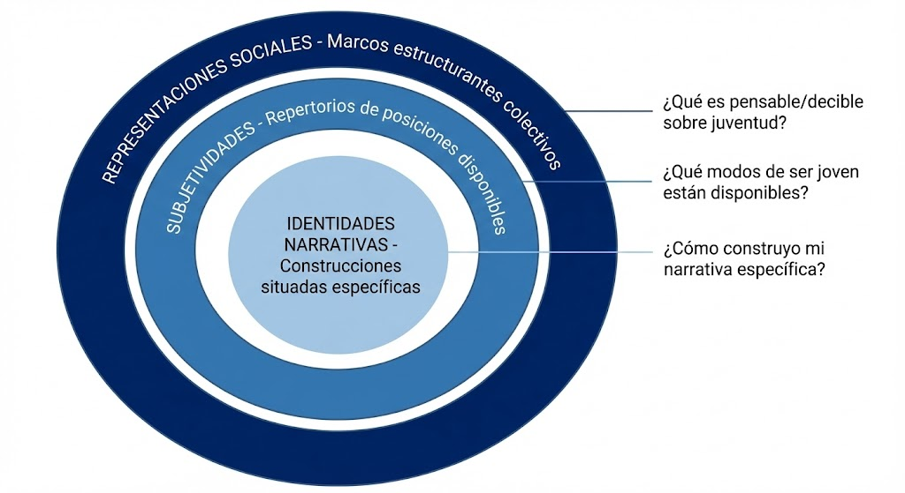
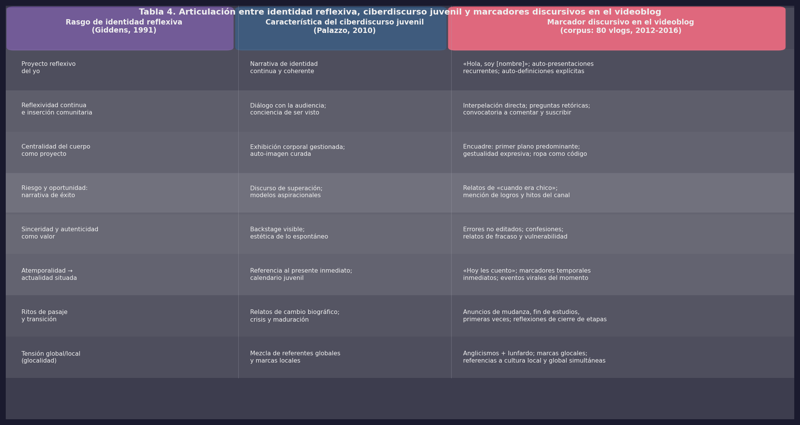
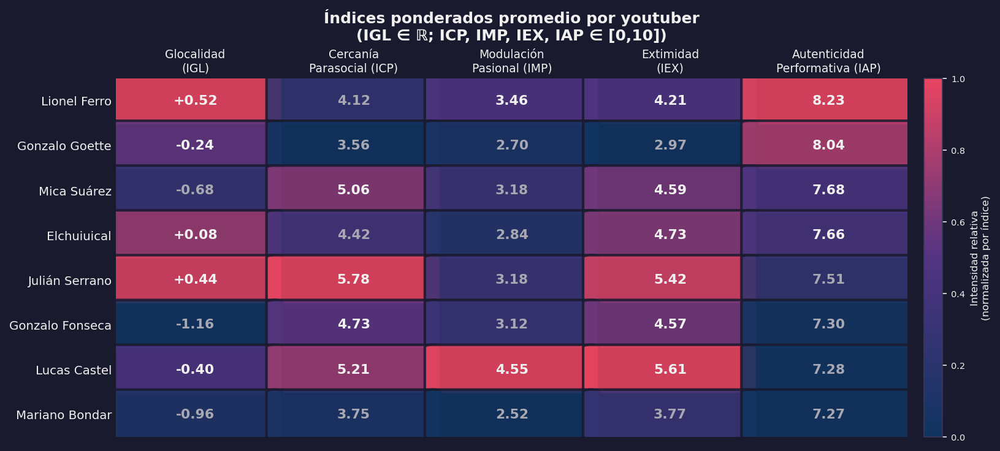

5 Identidades juveniles digitales: representaciones, narrativas y subjetividades en el videoblog
5.1 Introducción
En el capítulo anterior se caracterizó al videoblog como un género ciberdiscursivo que responde a necesidades comunicativas específicas de las juventudes contemporáneas. Se analizaron su estructura multimodal, su encuadre comunitario y las formas en que la interfaz de la plataforma moldea y restringe lo que es discursivamente posible. Ahora el análisis da un paso más: si el capítulo anterior preguntaba cómo se estructura el género, este pregunta qué se hace con él. La pregunta central que lo organiza es: ¿cómo construyen y negocian su identidad los jóvenes youtubers argentinos en el videoblog de YouTube?
Entendemos estas identidades no como esencias previas que los sujetos “expresan” en la plataforma, sino como prácticas discursivas multimodales situadas que se producen, negocian y transforman en la intersección entre lo individual y lo colectivo, lo emocional y lo reflexivo, lo local y lo global. Las identidades juveniles en el vlog emergen como narrativas afectivas construidas mediante la selección y articulación de episodios vitales “narrables” (Labov, 1972), que responden tanto a las lógicas biográficas del sujeto como a las condiciones de la plataforma: algoritmos, métricas de visibilidad, feedback de audiencias y representaciones circulantes sobre lo juvenil. Estas condiciones no son neutrales: como señalan Dijck et al. (2018, p. 4), las plataformas son “infraestructuras digitales programables que organizan las interacciones entre usuarios” mediante mecanismos de dataficación, mercantilización y selección algorítmica que moldean las posibilidades de lo decible y lo visible. La identidad del youtuber se construye, entonces, no solo en la plataforma, sino con y contra ella.
El análisis se organiza en tres niveles articulados. El nivel estructural corresponde a las representaciones sociales de juventud como marcos de posibilidad y restricción discursiva. El nivel interaccional corresponde a las subjetividades como modos situados de transitar y encarnar esas representaciones. El nivel narrativo corresponde a las identidades como montajes discursivos que articulan fragmentos biográficos mediante hilos conductores afectivos y temáticos. La hipótesis que los articula es que las identidades juveniles digitales en el videoblog se construyen como montajes narrativos afectivos multimodales, moldeados tanto por las decisiones reflexivas del enunciador como por las condiciones simbólicas y técnicas de la plataforma, y sostenidos por la modulación pasional como hilo conductor que les otorga coherencia biográfica y reconocimiento comunitario.
5.2 Marco conceptual
5.2.2 La presentación del self: de Goffman al vlog
La teoría dramatúrgica de Goffman (1959) ofrece herramientas centrales para comprender las dinámicas identitarias en el vlog. Los conceptos son conocidos, pero vale la pena precisar cómo operan en el medio digital.
La fachada (front) en el videoblog incluye el escenario de grabación, la apariencia, y los modales del youtuber frente a la cámara. La distinción entre frontstage y backstage se complejiza porque los youtubers graban frecuentemente en espacios privados —el dormitorio como espacio backstage por excelencia— y exhiben deliberadamente elementos de esa región posterior como estrategia de autenticidad. La edición permite controlar qué del backstage se revela, lo que genera lo que podríamos llamar un backstage curado: la exhibición de lo supuestamente espontáneo es, ella misma, un trabajo de producción.
Esta lógica conecta directamente con lo que Sibilia (2008) denominó extimidad: la exhibición estratégica de la intimidad como forma de construcción del yo en entornos de alta visibilidad. Ver un videoblog confesional no es leer el diario ajeno: es estar sentado en la habitación de alguien mientras te cuenta sus secretos mirándote a los ojos. Sin embargo, esos ojos están mirando a una cámara, y ese cuarto fue elegido, preparado, iluminado. La asimetría técnica del medio no destruye el efecto emocional de la extimidad —lo hace posible. La aplicación de Goffman al entorno digital requiere considerar las especificidades del medium: asincronía (que permite edición y control), escalabilidad (audiencia potencialmente masiva), persistencia (archivo de actuaciones) y replicabilidad (videos compartidos y resignificados).
5.2.3 Culturas juveniles y los “entre” generacionales
El concepto de culturas juveniles, desarrollado por Feixa P‘ampols (1998) y Feixa (2014), resulta fundamental para comprender las identidades que se construyen en el videoblog. Feixa define las culturas juveniles como “el conjunto de formas de vida y valores, expresados por colectivos generacionales en respuesta a sus condiciones de existencia social y material” (1998, p. 60). Esta definición enfatiza que lo juvenil no es una categoría biológica, sino una construcción sociocultural históricamente situada.
Para el análisis específico de nuestro corpus resultan particularmente productivos los aportes de Bernete (2007), quien considera que las culturas juveniles de la primera década del siglo XXI “habitan el ‘entre’”. Identifica cinco: entre la pertenencia a la cultura global y el refugio en las culturas locales; entre la vinculación a otros jóvenes y la reproducción del mundo adulto; entre la comunicación de masas y la comunicación en red; entre el mandato de obedecer y el mandato de distinguirse; entre la escuela obligatoria y la escuela desbordada.
Estos “entre” no son tensiones abstractas, sino coordenadas estructurales que se materializan en prácticas discursivas concretas. Cuando Lucas Castel hace un video de Halloween usando un formato global, pero explicando que “en Argentina la gente mayor no tiene idea de lo que es Halloween” (VID 1), está habitando productivamente el entre global/local. Cuando Julián Serrano construye su identidad rebelde, pero simultáneamente apela a experiencias compartidas con su audiencia joven, está negociando entre distinguirse y pertenecer. A su vez, Bernete (2007) señala que Internet ha recuperado la palabra, pero que los jóvenes siguieron decantando por opciones más emotivas: el vlog “ha traído a la blogsfera la experiencia no verbal: intercambio de imágenes, fijas o en movimiento, con sonido o sin él, pero sin texto que cuente algo, haciendo que el sentido dependa mucho más de quien lo recibe y sus circunstancias” (p. 69). Lo que nos importa de este señalamiento es que el vlog no resuelve los “entre” sino que los convierte en materia prima narrativa.
El diseño de nuestra matriz de análisis operacionalizó estos planteos teóricos mediante pares de oposición que permitieron registrar cómo las identidades juveniles se discursivan en la tensión entre polos aparentemente contradictorios: Global/Local, Mundo joven/Mundo adulto, Comunicación en redes/Comunicación en masas, Obedecer/Distinguirse. Como señala García Canclini (1995) en su conceptualización de las culturas híbridas, no se trata de procesos de sustitución, sino de entrecruzamiento.
5.2.4 El modelo integrado
Proponemos un modelo analítico que articula tres niveles complementarios: las representaciones sociales como marcos estructurantes que delimitan lo pensable, decible y mostrable sobre juventud; las subjetividades como repertorios de posiciones disponibles para los sujetos dentro de esos marcos; y las identidades narrativas como las construcciones específicas que cada youtuber elabora articulando selectivamente elementos de los niveles anteriores mediante hilos narrativos que otorgan coherencia biográfica.

5.4 Subjetividades juveniles: de la teoría a la operacionalización
Algunos antecedentes significativos han trazado el camino para este análisis. Campos Rodríguez (2007) señala que los videoblogs funcionan como vehículos privilegiados para la expresión individual, aunque advierte la necesidad de abordarlos desde la formación de subculturas dentro del sistema de valores hegemónico. Chau (2010) demuestra en qué medida YouTube provee una plataforma sociotécnica apta para mantener una cultura participativa entre sus usuarios. Burke et al. (2009) señala que los medios participativos han derribado las barreras tradicionales entre creadores y consumidores, facilitando el desarrollo de comunidades virtuales donde los creadores optan por “incluir” a su audiencia. Sin embargo, Bañuelos (2009) advierte que “YouTube reproduce las principales cualidades de la sociedad del espectáculo, basado en la estrategia de la ‘autoproducción’ limitada por la lógica de mercado y el plan de negocios del sitio” (p. 23), lo que implica que la agencia de los youtubers se despliega dentro de límites estructurales concretos.
Nuestra propuesta analítica recoge los rasgos de la identidad propuestos por Giddens (1991) en un entrecruzamiento con las características del ciberdiscurso juvenil desarrolladas por Palazzo (2010). Las propiedades del proyecto narrativo del yo según Giddens —continuidad biográfica, reflexividad, gestión del cuerpo, relación con el otro— encuentran en el vlog formas idóneas de materialización. El proyecto narrativo se inicia desde el momento mismo en que se elige una tecnología considerada apta para enunciar el yo, y opera en presente continuo: interesa primordialmente quién se es hoy, con referencias menos sistemáticas al pasado biográfico o al futuro proyectado.
La Tabla 4 sistematiza esta articulación: cada rasgo identitario propuesto por Giddens se corresponde con características del ciberdiscurso juvenil y se materializa en estrategias discursivas observables en el corpus.

5.4.1 Repertorio de subjetividades disponibles
Del análisis cualitativo del corpus emergen seis subjetividades principales que los youtubers activan, combinan y modulan a lo largo de sus narrativas. Estas subjetividades no constituyen posiciones fijas o esencias identitarias inmutables, sino modos situados de ser y estar en el mundo que se actualizan mediante estrategias discursivas y multimodales específicas. Un mismo youtuber puede transitar entre diferentes subjetividades según el video, la temática, la audiencia proyectada o el momento de su trayectoria como creador. Son, en definitiva, repertorios culturalmente disponibles que los jóvenes despliegan estratégicamente: las identidades se construyen en la reiteración de actos, gestos y performances que van sedimentando gradualmente una apariencia de sustancia.
5.4.1.1 El creador autodidacta
Esta subjetividad se construye alrededor de la figura del joven que ha desarrollado competencias técnicas y creativas de manera autónoma, al margen de instituciones educativas formales. El youtuber que la activa se presenta como alguien que aprendió solo mediante el ensayo y el error, comparte generosamente su conocimiento con la comunidad, y reivindica la autonomía y la creatividad personal frente a las instituciones tradicionales.
El análisis cuantitativo del corpus revela que 31 de los 80 videos (38.75%) presentan un posicionamiento claro del youtuber como “experto” que enseña algo a su audiencia; 18 videos (22.5%) adoptan explícitamente el formato tutorial; y 24 menciones textuales refieren de manera directa al proceso de aprendizaje autodidacta. En Lucas Castel, el análisis técnico de sus producciones iniciales muestra recursos audiovisuales primitivos —planos inestables, cortes directos básicos— que no se ocultan, sino que se reivindican como parte del proceso de aprendizaje. Esta “torpeza” técnica inicial cumple una función identitaria: certifica que el creador empezó de cero.
5.4.1.2 El rebelde transgresor
Esta subjetividad se articula en torno al joven que desafía normas adultas en ámbitos escolares, familiares y sociales. Recurre frecuentemente al humor provocativo y al lenguaje explícito como marcas de autenticidad, y reivindica la libertad personal como valor supremo de la juventud.
Los datos del corpus evidencian la presencia significativa de esta subjetividad: 34 de los 80 videos (42.5%) incluyen contenido abiertamente transgresor o provocador; 21 videos (26.25%) presentan referencias sexuales o a temas tabú de manera deliberadamente explícita; el uso de lenguaje soez o explícito aparece en 28 videos (35%); y se identifican 19 casos donde los youtubers mencionan conflictos con figuras de autoridad. El caso de Julián Serrano resulta ilustrativo: en “10 personajes típicos de la secundaria” caracteriza paródicamente al “rebelde típico” que no se ata los cordones porque “él es tan malo y tan rebelde que no sigue las reglas”. La parodia no distancia a Serrano de esta subjetividad —al contrario, demuestra un conocimiento interno profundo de ella.
5.4.1.3 El joven de barrio cercano
Esta subjetividad construye proximidad con la audiencia mediante la énfasis en el origen popular y la visibilización constante de la vida cotidiana “normal”. El youtuber se presenta como “uno más”, alguien que comparte experiencias, espacios y dificultades comunes con sus seguidores.
Es la subjetividad más frecuente del corpus: 52 de los 80 videos (65%) abordan temáticas de vida cotidiana; las marcas de oralidad aparecen en 67 videos (83.75%); las referencias a espacios domésticos y barriales en 45 videos (56.25%). Lucas Castel en VID 1 enuncia: “Hoy estamos en la calle, en vez de filmar en mi casa como hacíamos antes.” La construcción pronominal inclusiva (“estamos”), el contraste entre el “antes” doméstico y el “ahora” exterior, la referencia a “mi casa” como espacio habitual de grabación: todo contribuye a construir cercanía horizontal. Mica Suárez la despliega con matices propios: “Que feo que estoy. Recién llegué a mi casa, son las seis y media de la tarde. La mancha de su madre. ¿Sabes lo que es entrar a la computadora, abrir mi canal y ver esto?” La imperfección deliberada (“que feo que estoy”), el léxico coloquial (“la mancha de su madre”), el espacio doméstico: construyen autenticidad desde lo ordinario.
5.4.1.4 El humorista performático
Esta subjetividad coloca el humor como estrategia principal de construcción identitaria. El youtuber ejecuta performance teatral explícita, construye personajes y situaciones cómicas elaboradas, y establece el entretenimiento como valor central.
Los datos muestran que 38 de los 80 videos (47.5%) incluyen humor y parodia como recursos centrales; la performance y teatralidad explícita aparece en 44 videos (55%); el uso de personajes definidos se identifica en 26 videos (32.5%). Lucas Castel construye situaciones humorísticas elaboradas en VID 1 (sale disfrazado a asustar personas en la calle y hace preguntas falsas sobre Halloween a transeúntes). Elchuiuical construye prácticamente toda su identidad desde el humor absurdo y la performance exagerada: “EL PEOR RAPERO DE LA HISTORIA” (VID 62) es el ejemplo más extremo del corpus.
5.4.1.5 El joven reflexivo/intelectual
Esta subjetividad construye al youtuber como pensador crítico que aborda temas “profundos” o existenciales. Se posiciona como alguien capaz de cuestionar el sentido común, valorizando el conocimiento y la reflexión como formas de capital cultural juvenil.
Se identifican 31 videos (38.75%) con temáticas vinculadas a emociones, motivación y autoayuda; 22 videos (27.5%) con contenido explícitamente reflexivo o filosófico; 18 videos (22.5%) con algún tipo de crítica social explícita. Mariano Bondar ejemplifica esta subjetividad de manera paradigmática: sus videos abordan consistentemente temas existenciales, salud mental y reflexiones sobre experiencias vitales significativas. Julián Serrano también la activa ocasionalmente, pese al título autoirónico de “FILOSOFANDO (?)” que marca distancia respecto de la pretensión filosófica.
5.4.1.6 El vulnerable/sensible
Esta subjetividad invierte lógicas tradicionales de fortaleza y debilidad al construir la exhibición de fragilidad emocional como fortaleza identitaria. El youtuber comparte experiencias dolorosas, construye comunidad desde la vulnerabilidad compartida, y —en el caso de los youtubers varones— desafía mandatos de masculinidad hegemónica que proscriben la expresión emocional profunda.
Los datos muestran que 19 videos (23.75%) presentan al youtuber en estado emocional alterado o visiblemente afectado; las narrativas explícitas de vulnerabilidad o confesión aparecen en 24 videos (30%); y 21 videos (26.25%) incluyen referencias a problemas personales graves o familiares. Mariano Bondar constituye el caso más representativo: al mencionar diagnóstico psiquiátrico, describir síntomas concretos (no ir al colegio, no comer, querer estar solo) y posicionarse como alguien con “autoridad experiencial sobre el tema” aunque con humildad epistémica (“no sé si de cómo superarla”), construye una credibilidad que deriva precisamente de haber atravesado el dolor.
5.4.2 Articulación subjetividades × representaciones
Las seis subjetividades identificadas no operan de manera aislada, sino que se articulan productivamente con las representaciones sociales de juventud. La siguiente tabla visualiza estas articulaciones.
Articulación subjetividades × representaciones
| Subjetividad | Residentes digitales creativos | Libertad y experimentación | Youtuber como trabajo | Autenticidad | Juventud vulnerable |
|---|---|---|---|---|---|
| Auténtico vulnerable | Media | Media | Baja | Alta | Alta |
| Rebelde irónico | Media | Alta | Baja | Media | Media |
| Emprendedor digital | Alta | Media | Alta | Media | Baja |
| Nativo afectivo | Media | Media | Baja | Alta | Media |
| Cronista de lo cotidiano | Baja | Media | Baja | Alta | Media |
| Performer carismático | Alta | Alta | Media | Media | Baja |
El auténtico vulnerable (Mariano Bondar en sus videos confesionales) articula con máxima intensidad autenticidad y vulnerabilidad: solo un yo percibido como genuino puede mostrarse vulnerable sin que esa vulnerabilidad sea leída como performance. El rebelde irónico (Julián Serrano en “FILOSOFANDO”) articula primariamente la representación de libertad y experimentación, desplegándola mediante una retórica de la irreverencia que desafía las expectativas adultas —la ironía funciona como escudo: permite decir cosas transgresoras manteniendo distancia.
El emprendedor digital (Lionel Ferro y Lucas Castel en videos sobre viajes a YouTube o eventos) es el que más explícitamente tematiza la plataforma como espacio profesional. El nativo afectivo (presente en segmentos de Mica Suárez y Julián Serrano) prioriza autenticidad, pero la despliega desde la transparencia emocional cotidiana, no desde la confesión dramática.
El cronista de lo cotidiano (Gonzalo Fonseca, Lucas Castel en vlogs domésticos) convierte la falta de acontecimiento en acontecimiento narrable. El performer carismático (Elchuiuical, Gonzalo Goette) es auténtico precisamente por la transparencia sobre la performance: no oculta que está actuando, y su credibilidad reside en eso.
Esta matriz permite visualizar cómo las construcciones identitarias de los youtubers no son invenciones espontáneas, sino que emergen de articulaciones creativas de recursos simbólicos socialmente disponibles.
5.5 Sistema de índices ponderados
5.5.1 Justificación metodológica
Enfrentamos aquí una pregunta metodológica que no admite respuestas fáciles: ¿cómo operacionalizar dimensiones tan complejas como la glocalidad, la cercanía parasocial, la modulación pasional, la extimidad o la autenticidad performativa de manera que permitan comparaciones sistemáticas sin traicionar la riqueza interpretativa acumulada?
Nuestra posición se sitúa deliberadamente en el espacio productivo de esta tensión. Los cinco índices ponderados que presentamos —Glocalidad (IGL), Cercanía Parasocial (ICP), Modulación Pasional (IMP), Extimidad (IEX) y Autenticidad Performativa (IAP)— no aspiran a “medir” las identidades juveniles como si fueran propiedades objetivas y estables. Son, más modestamente, herramientas heurísticas: dispositivos que nos permiten hacer preguntas comparativas, identificar tipologías empíricas, visualizar tendencias estructurales que después deben ser reinterpretadas cualitativamente. Como ha argumentado Boudon (1993), los modelos cuantitativos en ciencias sociales no aspiran a capturar “la realidad” sino a generar representaciones simplificadas que faciliten el pensamiento teórico y la comunicación científica. En este sentido, los índices funcionan más como mapas que como fotografías: sacrifican deliberadamente ciertos detalles para hacer visible la topografía general del terreno.
5.5.2 Índice de Glocalidad (IGL)
Cuando Lucas Castel abre uno de sus videos diciendo “che boludo, la concha de la lora, no sabés lo que me pasó ayer” mientras lleva puesta una remera de Los Simpsons con música electrónica de fondo, está performando en ese instante la tensión constitutiva de las identidades juveniles contemporáneas. Su acento es inconfundiblemente argentino, su léxico es profundamente rioplatense, su corporalidad gestual responde a códigos comunicativos locales. Y sin embargo, la serie que referencia es global, la música circula por redes transnacionales, los temas que trata lo conectan con comunidades juveniles que trascienden las fronteras de Argentina.
Esta simultaneidad de lo local y lo global es lo que Robertson (1995) denominó “glocalización”. Nuestro Índice de Glocalidad operacionaliza esta dimensión midiendo el equilibrio entre elementos culturales que anclan al youtuber en coordenadas territoriales específicas versus elementos que lo proyectan hacia comunidades juveniles transnacionales. La escala va de -10 (máxima localización) a +10 (máxima globalización), con el 0 representando equilibrio. Las variables que suman hacia lo global (+) incluyen: glocalidad y referencias culturales mixtas (+1.5), vocabulario gamer/web (+1), léxico web general (+1), referencias a viajes y experiencias (+1), y exteriores de viajes (+1.5). Las variables que restan hacia lo local (-) incluyen: dialecto propio marcado (-2), lenguaje dialectal y léxico juvenil argentino (-1), referencia a jerga juvenil local (-1), cambio de variedad dialectal (-1), y espacios privados/domésticos argentinos (-0.5).
5.5.4 Índice de Modulación Pasional (IMP)
Todo enunciado tiene un contenido proposicional, y una “coloración” afectiva que modula cómo debe interpretarse ese contenido. Esta “coloración” es lo que la semiótica de las pasiones (Greimas & Fontanille, 1993) denomina modulación pasional. En el videoblog, esta dimensión adquiere complejidad especial porque los youtubers no solo dicen cosas, sino que las performan corporalmente ante la cámara: las emociones se exhiben mediante recursos multimodales que incluyen expresión facial, tono de voz, gestualidad corporal, edición de video y música de fondo.
Nuestro IMP se construye en una escala de 0 a 10. Las variables que suman incluyen: expresividad facial marcada (+2), gestualidad con manos (+1), corporalidad destacada (+1), estado emocional alterado (+2), música de fondo (+0.5), audios enlatados (+0.5), y clips insertados (+0.5). Las variables que restan incluyen: silencio como recurso (-1) y ausencia de música y efectos.
5.5.5 Índice de Extimidad (IEX)
“Lo íntimo deviene éxtimo” escribió Lacan para describir cómo aquello que debería permanecer protegido de la mirada ajena sale a la luz y se exhibe públicamente. Sibilia (2008) retomó y desarrolló este concepto para analizar las nuevas formas de construcción del yo en internet. En el videoblog, la extimidad adquiere una materialidad especialmente intensa: los youtubers performan corporalmente su intimidad, la muestran en sus espacios domésticos, la sonorizan con sus voces, risas y llantos.
Nuestro IEX se construye en una escala de 0 a 10. Las variables que suman incluyen: espacio privado (+1), dormitorio específicamente (+1.5), referencias a familia y vínculos afectivos (+1), temática de amor, pareja y sexualidad (+1.5), exhibición del cuerpo (+1), vida cotidiana (+0.5), y existencia de rasgos de backstage como sexualidad, exhibición corporal, descuidos y nombres de pila (+0.5 cada uno). Los espacios públicos restan del índice.
5.5.6 Índice de Autenticidad Performativa (IAP)
“Ser auténtico” es el mandato más extendido y paradójico de las culturas digitales contemporáneas. Los youtubers nos exhortan a “ser nosotros mismos” mientras ejecutan performances cuidadosamente elaboradas. Esta paradoja no es un defecto del sistema, sino su principio de funcionamiento. “Autenticidad performativa” intenta capturar esto: la autenticidad digital no es algo que se tiene o no se tiene, sino algo que se construye, se performa, se negocia constantemente.
El IAP se construye como un ratio entre marcadores de autenticidad y marcadores de performance. Los marcadores de autenticidad incluyen: sinceridad (+2), dialecto propio (+1), marcas de oralidad (+1), referencias a vida cotidiana (+1), espacio privado (+1), errores visibles conservados (+1), y referencias autobiográficas (+1). Los marcadores de performance incluyen: performance y teatralidad (+2), personajes definidos (+1), música dramática (+0.5), edición muy elaborada (+0.5). El índice final es: IAP = (Autenticidad / (Autenticidad + Performance)) × 10.
5.5.7 Resultados generales del corpus
La aplicación de los cinco índices a los 80 videos del corpus revela patrones estructurales que merecen ser destacados.
En el IGL, la mediana se sitúa en 0.00 con una media de -0.30, indicando que el corpus en su conjunto mantiene un equilibrio entre elementos locales y globales, con ligera tendencia hacia lo local. El rango va desde -5.20 hasta +6.40, evidenciando alta variabilidad estratégica. El standard de desviación de 2.53 confirma que los youtubers modulan activamente su posicionamiento glocalidad.
En el ICP, la mediana es 4.50 y la media 4.58, con rango entre 1.50 y 7.50. La distribución relativamente simétrica y concentrada en valores medios-altos confirma empíricamente la hipótesis teórica: la construcción de cercanía parasocial es estrategia central y transversal del videoblog juvenil exitoso.
En el IMP, la mediana es 2.80 y la media 3.19, con rango entre 0.00 y 8.05. La distribución muestra asimetría positiva: se concentra en valores bajos-medios, pero con cola larga hacia la intensidad alta, lo que sugiere que la hiperexpresividad es un recurso selectivo, no la norma.
En el IEX, la mediana es 4.40 y la media 4.48, con rango amplio entre 0.28 y 8.53. La distribución relativamente amplia y centrada en valores medios evidencia que la extimidad es estrategia presente, pero calibrada: no exposición indiscriminada, sino gestión estratégica de la intimidad digital.
En el IAP, la mediana es 7.69 y la media 7.62, con rango entre 5.71 y 10.00. Todos los videos del corpus se concentran en valores altos, lo que valida que la autenticidad es condición estructural del videoblog exitoso: ningún video analizado puede prescindir de marcadores de genuinidad.
MATRIZ_FINAL_RESTAURADA.csv.
| Youtuber | IGL | ICP | IMP | IEX | IAP |
|---|---|---|---|---|---|
| Lucas Castel | -0.40 | 5.21 | 4.55 | 5.61 | 7.28 |
| Julián Serrano | 0.44 | 5.78 | 3.18 | 5.42 | 7.51 |
| Mica Suárez | -0.68 | 5.06 | 3.18 | 4.59 | 7.68 |
| Mariano Bondar | -0.96 | 3.75 | 2.52 | 3.77 | 7.27 |
| Gonzalo Goette | -0.24 | 3.56 | 2.70 | 2.97 | 8.04 |
| Lionel Ferro | 0.52 | 4.12 | 3.46 | 4.21 | 8.23 |
| Elchuiuical | 0.08 | 4.42 | 2.84 | 4.73 | 7.66 |
| Gonzalo Fonseca | -1.16 | 4.73 | 3.12 | 4.57 | 7.30 |
El análisis de temas mediante LDA sobre las transcripciones corrobora y enriquece estos resultados. Los 8 temas detectados presentan distribuciones diferenciadas de IAP promedio que confirman la tipología de subgéneros del capítulo anterior: el tema 5 (palabras clave: dinero, dale, billetera, tijera, papel; asociado a desafíos y apuestas) presenta el IAP más alto del corpus (8.43), confirmando que la exposición al riesgo apela directamente a la demanda de autenticidad del vínculo parasocial. El tema 2 (estamos, dale, celular, sheldon, día; asociado al vlog cotidiano de Gonzalo Goette) y el tema 8 (yao, verdad, hotel, miren, fue; asociados a situaciones de confrontación o storytime) presentan IAP ≈ 7.73. El tema más bajo (Tema 7: duele, parece, sea, ah, va) obtiene IAP = 6.82, el único por debajo de la media del corpus, lo que confirma que los videos de contenido más suave o indirecto construyen percepción de autenticidad con menor intensidad. La convergencia entre el análisis cualitativo y el modelado computacional refuerza la solidez de los hallazgos.

5.6 Estrategias multimodales de construcción subjetiva
Las seis subjetividades identificadas y los índices que las operacionalizan no flotan en el vacío ni se construyen únicamente mediante el discurso verbal. Las identidades digitales en el videoblog se configuran multimodalmente, a través de la articulación compleja de recursos corporales, espaciales, sonoros y visuales. Como ha demostrado Kress (2010), cada modo semiótico aporta potencialidades expresivas específicas que no pueden ser reducidas a otros modos.
5.6.1 El cuerpo como texto identitario
El análisis cuantitativo del corpus revela que el 40% de los videos presentan corporalidad destacada como recurso expresivo central. El cuerpo del youtuber no es un soporte neutro, sino un texto en sí mismo que se lee, se interpreta, se valora, se desea o se rechaza.
La gestualidad, documentada meticulosamente en la matriz de análisis, constituye el primer nivel de significación corporal. Los gestos enfáticos con las manos, presentes en el 83.75% del corpus, no solo acompañan el habla, sino que la modulan e intensifican. La gestualidad facial —que nuestro análisis registra como “comunicación facial muy marcada” en múltiples videos— construye intensidades emocionales específicas: el youtuber que cuenta algo triste con expresión grave pide empatía; el que narra algo gracioso con la sonrisa contenida que finalmente estalla construye complicidad humorística. Se identifican 8 videos (10%) con exhibición corporal explícita en formato “sin remera”, y 12 videos (15%) con estrategias de “beboteo” o coquetería deliberada. La youtuber femenina del corpus, Mica Suárez, tiende a estrategias corporales más contenidas que resisten activamente la hipersexualización de su cuerpo —lo que también es, en sí mismo, un posicionamiento identitario.
5.6.2 Geografías de la autenticidad
El corpus revela que el 52.5% de los videos se graban predominantemente en espacios privados (dormitorio y sala familiar) y el 47.5% en espacios públicos o exteriores. El análisis cualitativo revela que no se trata de una “preferencia” sino de estrategias espaciales que producen efectos semióticos radicalmente diferentes.
El dormitorio opera como el marcador de intimidad por excelencia. Al grabar desde su cuarto, el youtuber invita simbólicamente a la audiencia a ingresar en su espacio más íntimo, construyendo una ilusión de proximidad: esto es extimidad materializada (Sibilia, 2008). Los espacios exteriores y públicos significan aventura, libertad, exploración. El 30% de los videos incluyen cambios de escenario dentro del mismo video, construyendo dinamismo y agencia. Lucas Castel narra explícitamente este movimiento en VID 1: “Hoy estamos en la calle, en vez de filmar en mi casa como hacíamos antes.” El contraste entre el “antes” doméstico y el “ahora” exterior narra una evolución, un crecimiento.
5.6.3 La música de las emociones
El análisis cuantitativo muestra que el 56.25% de los videos incluyen música de fondo, el 38.75% incorporan efectos sonoros preproducidos, y el 15% utilizan el silencio estratégico como recurso semiótico. La música no opera como “fondo” decorativo, sino que construye atmósferas emocionales específicas y guía la respuesta afectiva de la audiencia.
Cuando Lucas Castel acompaña un tutorial de edición con música electrónica energética, está construyendo entusiasmo: asocia el aprendizaje técnico con placer y vitalidad. Cuando Mariano Bondar narra experiencias de duelo con música melancólica de fondo, está intensificando el dramatismo sin decirlo explícitamente. Los efectos sonoros cómicos (risas enlatadas, sonidos de dibujos animados) marcan explícitamente el registro humorístico y señalizan cuándo la audiencia debe interpretar algo como broma: en contextos de audiencias masivas y heterogéneas donde el humor puede malinterpretarse, estos efectos funcionan como instrucciones de lectura. El recurso más sofisticado es el silencio estratégico: en los videos de Mariano Bondar, el silencio acompaña frecuentemente los momentos de máxima vulnerabilidad, produciendo efecto de gravedad que ningún otro recurso sonoro podría generar.
5.6.4 Combinaciones y modulaciones subjetivas
Los youtubers raramente encarnan una única subjetividad de manera exclusiva. Las construcciones identitarias efectivas en YouTube resultan de combinaciones estratégicas y modulaciones situacionales según contextos comunicativos específicos, temas abordados y objetivos de cada video.
La combinación más frecuente del corpus articula la subjetividad del joven cercano con la del humorista performático (35% de los videos con ambas marcas). Construye humor desde la identificación horizontal: el youtuber hace reír no desde una posición de superioridad, sino desde la complicidad con experiencias compartidas. La articulación entre el rebelde transgresor y el vulnerable sensible aparece en el 18% de los casos: el youtuber no es un rebelde unidimensional, sino alguien que transgrede desde la conciencia de su propia fragilidad —cuando Mariano Bondar cuenta su depresión y simultáneamente desafía normas de masculinidad hegemónica, ambas subjetividades se potencian. La combinación reflexivo/intelectual con autodidacta (22% de casos) construye una forma de autoridad intelectual alternativa que se legitima en la experiencia vivida, no en credenciales institucionales. La combinación aparentemente paradójica entre performático y auténtico (28% de casos) evidencia algo fundamental: la autenticidad en YouTube no es la ausencia de performance, sino la capacidad de construir performances percibidas como genuinas.
5.7 Análisis multimodal de seis videos paradigmáticos
El análisis de las estrategias multimodales adquiere densidad interpretativa cuando se examina su funcionamiento concreto en videos específicos. Los seis videos que presentamos ilustran diferentes configuraciones identitarias, articulando las dimensiones visual, sonora y verbal en diálogo con los índices cuantitativos y las subjetividades identificadas. La selección responde a criterios de representatividad: cada uno ilustra un perfil diferenciado.
5.7.1 Lucas Castel, “50 COSAS SOBRE MÍ” (VID 5): la intimidad calibrada
Duración: 321 segundos (5:21 min). Word count: 2.250 palabras. Formato: Tag autobiográfico. Índices promedio del youtuber: IGL -0.40 | ICP 5.21 | IMP 4.55 | IEX 5.61 | IAP 7.28.
El video se desarrolla íntegramente en la sala del hogar familiar, con un fondo que exhibe elementos domésticos reconocibles. Esta elección espacial opera en una zona intermedia entre lo público y lo privado: no es el dormitorio (espacio de máxima intimidad) pero tampoco un estudio profesional. El encuadre alterna entre primer plano y plano general, permitiendo tanto la conexión facial directa con la audiencia como la contextualización espacial que valida la domesticidad del entorno. La vestimenta —pantalón negro, remera gris, canguro rayado— comunica accesibilidad: “así me visto en mi casa, así soy normalmente.”
La apertura del video establece inmediatamente el contrato comunicativo: “¿Qué tal amigos y amigas, cómo están? El video de hoy es un poco diferente, es más personal, vendría a ser. Lo vinieron haciendo otros youtubers y consiste en contar 50 cosas sobre mí. Así me conocerán un poquito más y saben quién carajo soy, ¿no?” El saludo inclusivo (“amigos y amigas”), la metacomunicación sobre el formato, y la expresión “quién carajo soy” introducen el registro coloquial que caracterizará todo el video.
El contenido revelado oscila estratégicamente entre lo trivial y lo significativo. Por un lado: “Una de las cosas que más me gusta hacer es comer budín mientras me baño” (1:14-1:18), confesión deliberadamente absurda que construye autenticidad por la revelación de excentricidades menores. Por otro: “Tuve solamente una novia y estoy soltero hace rato. Y la verdad se vive muy bien así, papá” (1:20-1:26), donde el tema potencialmente sensible se desactiva inmediatamente con el comentario jocoso. Esta oscilación entre revelación e ironía es característica del estilo de Lucas: permite intimidad calibrada donde la audiencia siente que “conoce” al youtuber sin que este se exponga a riesgos emocionales significativos. El IEX elevado (5.61) se materializa no mediante confesiones dramáticas, sino mediante acumulación de detalles cotidianos que construyen familiaridad gradual.
5.7.2 Julián Serrano, “Draw My Life” (VID 13): la biografía espectacularizada
Duración: 343 segundos (5:43 min). Word count: 1.235 palabras. Formato: Draw My Life (narrativa autobiográfica ilustrada). Índices promedio: IGL 0.44 | ICP 5.78 | IMP 3.18 | IEX 5.42 | IAP 7.51.
El formato Draw My Life impone restricciones visuales específicas: la imagen principal es una pizarra donde una mano dibuja mientras la voz narra. El cuerpo del youtuber está ausente durante la mayor parte del video, sustituido por dibujos esquemáticos. Esta ausencia corporal es significativa precisamente porque Julián es el youtuber del corpus que más capitaliza su corporalidad como recurso identitario: en el Draw My Life, esa corporalidad se sublima. No vemos su cuerpo, pero escuchamos su voz narrando su historia.
El video despliega una narrativa biográfica completa desde el nacimiento hasta el presente, articulando humor irreverente con momentos de emoción genuina. La estrategia narrativa predominante combina humor con deflexión de lo dramático: “Hasta que un día, chan chan chan, se rompió el condón y nací yo. Dándole fin a la joda de mi viejo y fin al estudio y proyectos de vida de mamá” (0:54-1:03). La revelación de un embarazo no planificado se enmarca mediante onomatopeya dramática irónica y se neutraliza con el humor. Pero el video incluye también momentos de emoción no deflectada: “Yolanda se llama haciendo honor a mi abuela, la mamá de Oscar. Se mudó al cielo cuando tenía apenas 7 años. Te queremos, Saúl” (1:12-1:19). La mención de la abuela fallecida introduce una pausa emocional genuina que contrasta con el tono predominante y demuestra capacidad de modular entre humor y emoción.
El Draw My Life de Julián ejemplifica la “narrativa identitaria espectacularizada”: una biografía completa contada mediante estrategias que la hacen entretenida, compartible, memorable. El formato global (Draw My Life es un género transnacional de YouTube) se ejecuta con marcada localización: el acento, los nombres de lugares argentinos, las referencias culturales específicas. Su IGL positivo (0.44) es el más alto del corpus en valores positivos, y se materializa precisamente en esta combinación.
5.7.3 Mariano Bondar, “COMO SUPERÉ LA MUERTE DE MI AMIGO” (VID 50): el límite de la extimidad
Duración: 1.113 segundos (18:33 min). Word count: 2.570 palabras. Formato: Video confesional/reflexivo. Índices promedio: IGL -0.96 | ICP 3.75 | IMP 2.52 | IEX 3.77 | IAP 7.27.
El video se desarrolla en la sala del hogar, con Mariano en primer plano sostenido durante toda la duración. El fondo es neutro y despojado, centrando la atención exclusivamente en el rostro. Esta economía visual es significativa: no hay entretenimiento visual que compita con el contenido verbal, no hay cortes a imágenes ilustrativas, no hay efectos visuales. El plano fijo sostenido durante 18 minutos es una decisión estética radical en el contexto del videoblog, donde los cortes dinámicos son norma. Esta quietud produce efecto de gravedad: el video demanda atención sostenida porque su estructura visual no ofrece estímulos alternativos.
La música de fondo puede parecer contradictoria con el tono confesional, pero opera como colchón emocional que sostiene al espectador durante un relato extenso y emocionalmente demandante. La ausencia de efectos sonoros humorísticos es total y deliberada: no hay alivio cómico, no hay escape del peso emocional.
El núcleo del video articula la experiencia de pérdida con sus consecuencias psicológicas de manera que excede lo habitual en el género. La frase “no lo he hablado con nadie realmente” posiciona al video como espacio de intimidad más profunda que las relaciones cara a cara: el youtuber puede decirle a millones de espectadores lo que no pudo decir a amigos o familiares. Y el cierre del video explicita esta lógica con una lucidez notable:
“Al menos mi historia es real, y sabés que acá no hay nada que te haya dibujado. Es un alivio poder contarles esto. Como siempre, gracias por el espacio.” (VID 50, 17:15-17:33)
“Gracias por el espacio” transforma a la audiencia de espectadores en testigos, y al canal de plataforma en espacio terapéutico. La insistencia en que “mi historia es real” no es un gesto de autenticidad performativa, sino una declaración de pacto: Bondar le está pidiendo a su público que lo crea, y la intensidad del pedido es proporcional a la gravedad de lo confesado.
Este video representa un caso límite que ilumina, por contraste, el funcionamiento habitual de la extimidad en el corpus. El IEX promedio de Mariano (3.77), uno de los más bajos, indica que este nivel de exposición es excepcional: la extimidad de Bondar opera por picos dramáticos más que por exhibición constante, y eso es lo que hace que los momentos de apertura radical adquieran peso extraordinario.
5.7.4 Mica Suárez, “50 COSAS SOBRE MÍ” (VID 74): la autenticidad femenina
Duración: 988 segundos (16:28 min). Word count: 2.849 palabras. Formato: Tag autobiográfico. Índices promedio: IGL -0.68 | ICP 5.06 | IMP 3.18 | IEX 4.59 | IAP 7.68.
A diferencia de otros videos del formato, Mica alterna entre múltiples espacios: dormitorio, sala y exteriores. Esta movilidad espacial construye dinamismo visual y exhibe diferentes facetas de su vida cotidiana. El fondo del dormitorio —con posters de regalos de fans— evidencia la relación bidireccional con la audiencia: la decoración misma es un producto de esa relación.
La apertura establece autoconciencia sobre el formato y posicionamiento dentro de la comunidad: “Hola Youtube, como habrán visto en el título del video, hoy voy a hacer un tag. Ya sé que el 50 cosas sobre mí ya lo hicieron todos los youtubers. De hecho creo que 9 de cada 10 youtubers lo hicieron. Pero nada, yo lo quería hacer porque no me quería dejar con las ganas. Creo que soy la única pelotuda que no lo hizo” (0:03-0:19). La autodescripción como “la única pelotuda” combina autocrítica humorística con reivindicación de agencia: hace el video porque quiere, no porque la tendencia la presione.
El video de Mica ilustra una construcción de autenticidad específicamente generizada. Su IEX de 4.59 indica exposición moderada, sin recurrir ni a la contención extrema ni a la confesión dramática. La subjetividad desplegada combina el “joven de barrio cercano” con el “vulnerable/sensible”, modulada por la experiencia femenina: la vulnerabilidad se expresa en términos de bullying y presiones estéticas más que en crisis existenciales.
5.7.5 Gonzalo Goette, “BESANDO MUJERES FRENTE A SUS NOVIOS” (VID 52): la autenticidad por riesgo
Duración: 218 segundos (3:38 min). Word count: 424 palabras. Formato: Prank / Experimento social. Índices promedio: IGL -0.24 | ICP 3.56 | IMP 2.70 | IEX 2.97 | IAP 8.04.
El video se desarrolla íntegramente en exteriores urbanos. La cámara opera en plano general priorizando la documentación de la situación sobre la intimidad del primer plano. El contenido verbal es mínimo y funcional: “Hola gente, hoy voy a ir a besar chicas a la calle usando un truco, pero lo voy a hacer enfrente de sus novios. Vamos a ver qué pasa” (0:00-0:05). Este contrato establece transgresión social, riesgo e incertidumbre. El atractivo del video reside precisamente en que las reacciones son impredecibles.
El video de Goette representa una vía alternativa de construcción de autenticidad que no depende de la confesión íntima ni de la exhibición del espacio privado. Su IAP, el más alto del corpus (8.04), se construye paradójicamente mediante la exposición al riesgo real: los golpes, insultos o rechazos que puede recibir no pueden ser guionados. La “verdad” del video reside en que Gonzalo efectivamente se expone a consecuencias impredecibles. Esto explica la aparente contradicción de tener el IAP más alto junto con el IEX más bajo: Gonzalo es auténtico no porque muestre su interioridad, sino porque pone su cuerpo en situaciones de fricción social real. No narra su yo; lo pone a prueba en el encuentro con el otro.
5.7.6 Lionel Ferro, “LES PRESENTO AL AMOR DE MI VIDA” (VID 33): la autenticidad profesionalizada
Duración: 681 segundos (11:21 min). Word count: 1.634 palabras. Formato: Vlog con invitado (hermano menor). Índices promedio: IGL 0.52 | ICP 4.12 | IMP 3.46 | IEX 4.21 | IAP 8.23.
El video se desarrolla en espacios domésticos, pero con características que lo distinguen de otros youtubers. La matriz registra “entornos domésticos sin edición aparente”, pero el análisis cualitativo revela mayor control técnico: iluminación más uniforme, encuadre más estable, composición más cuidada. La vestimenta de Lionel (ropa deportiva, cadena de coco) connota un estilo juvenil globalizado más que un arraigo local específico, coherente con el IGL más alto del corpus (0.52).
La apertura exhibe autoconciencia sobre la imagen pública: “Yo creo que ahí estamos bien, ¿no? Estoy fachero ahí para empezar mi nuevo video, ¿o no? ¿Sí o no? Estoy fachero para empezar mi nuevo video” (0:00-0:08). La repetición de “fachero” y la verificación con alguien fuera de cámara evidencian preocupación explícita por la apariencia. Esta transparencia sobre la construcción de imagen funciona paradójicamente como marcador de autenticidad: Lionel no pretende que su atractivo es natural o despreocupado; admite que lo trabaja.
El video de Lionel ilustra una forma de autenticidad que no depende de la espontaneidad amateur, sino de la transparencia sobre la profesionalización. Su IAP elevado (8.23), segundo más alto del corpus, se construye mediante la admisión explícita de que hay trabajo detrás de la imagen: no simular que no hay producción, sino integrar la producción como parte de la identidad.
5.7.7 Síntesis comparativa
El análisis de estos seis videos revela que las estrategias multimodales no operan de manera uniforme, sino que se configuran en combinaciones específicas que producen efectos identitarios diferenciados. Lucas Castel despliega intimidad calibrada mediante espacio doméstico intermedio, contención gestual y regulación humorística. Julián Serrano construye la biografía espectacularizada mediante la sublimación del cuerpo en el formato Draw My Life. Mariano Bondar alcanza la confesión radical mediante espacio despojado, plano fijo y música discreta sin efectos. Mica Suárez articula autenticidad femenina mediante movilidad espacial y gestualidad expresiva. Gonzalo Goette produce autenticidad por riesgo mediante espacio público exclusivo y audio ambiental no controlado. Lionel Ferro construye autenticidad profesionalizada mediante control técnico visible y transparencia sobre la producción.
La constante estructural que atraviesa todos los casos es la necesidad de alguna forma de autenticidad percibida: ningún video analizado presenta una configuración donde la performance pura desplace completamente los marcadores de genuinidad. Pero las vías para construir esa autenticidad son múltiples: puede residir en la intimidad compartida, en la vulnerabilidad expuesta, en el riesgo asumido, en la transparencia sobre la producción, o en la acumulación de detalles cotidianos.
5.8 Perfiles identitarios por youtuber
El análisis de los índices promedio por youtuber permite identificar perfiles que complementan el análisis video por video.
Lucas Castel (IMP 4.55, máximo del corpus) es el “youtuber expresivo”: capitaliza la energía, el humor físico, la gestualidad amplia y la variación emocional constante. Su IGL ≈ 0 refleja equilibrio casi perfecto entre elementos locales y globales. El IEX elevado (5.61) indica disposición a la exhibición íntima modulada por la ironía.
Julián Serrano (ICP 5.78, máximo del corpus) es el “youtuber seductor”: capitaliza el vínculo afectivo con su audiencia, particularmente femenina, mediante estrategias de cercanía, exhibición corporal calibrada y construcción de deseabilidad. IEX también elevado (5.42), coherente con una presencia más íntima.
Mica Suárez presenta un perfil notablemente equilibrado, sin valores extremos en ningún índice. El IAP elevado (7.68) sugiere fuerte percepción de autenticidad con menor componente performático visible. Es la “youtuber reflexiva equilibrada”: construye autenticidad mediante combinación balanceada de estrategias.
Mariano Bondar (IGL -0.96, fuerte anclaje local) presenta valores relativamente bajos en IMP (2.52) e IEX (3.77), lo que podría parecer contradictorio con su imagen de youtuber “confesional”. Sin embargo, estos promedios reflejan que la mayoría de sus videos mantienen un registro contenido, lo que hace que sus momentos de apertura radical adquieran peso extraordinario precisamente por contraste. Es el “youtuber auténtico por contraste”.
Gonzalo Goette (IAP 8.04, máximo del corpus; IEX 2.97, mínimo del corpus) es el “bromista (prankster) auténtico”: credibilidad construida no mediante revelación íntima, sino mediante exposición a riesgo real. Su ICP relativamente bajo (3.56) refleja que no apuesta a la cercanía parasocial tradicional.
Lionel Ferro (IGL 0.52, máximo del corpus; ICP 3.83, mínimo del corpus) es el “youtuber profesionalizado”: construye autenticidad no simulando amateurismo, sino siendo transparente sobre su condición de creador profesional de contenidos. El IGL más alto del corpus, coherente con aspiraciones y conexiones que trascienden el ámbito local.
Elchuiuical (IAP 7.66, IEX 4.73) representa el “caos performático”: el humor absurdo y la performance exagerada son centrales, con valores medios en la mayoría de los índices. Su equilibrio en IGL (0.08 ≈ 0) refleja que opera en un espacio ni claramente local ni claramente global.
Gonzalo Fonseca (IGL -1.16, mínimo del corpus) es el polo de máxima localización. Construye identidad desde el arraigo territorial y la comunidad barrial más que desde la proyección global. Su IAP (7.30) es competitivo pese a la menor espectacularización de la producción.
5.9 Conclusiones parciales
5.9.1 Hallazgos estructurales
El análisis de los 80 videos que conforman el corpus permite identificar patrones que configuran lo que podríamos llamar la “gramática” de las identidades digitales juveniles en el videoblog argentino del período 2012-2016.
La autenticidad emerge como condición estructural del género. El IAP promedio del corpus (7.62) con concentración en valores altos (ningún video por debajo de 5.71) demuestra que todos los youtubers exitosos mantienen marcadores de autenticidad suficientes para evitar ser percibidos como artificiales. Sin embargo, las vías para construir esa autenticidad son múltiples: intimidad compartida, vulnerabilidad expuesta, riesgo asumido, transparencia sobre la producción, o acumulación de detalles cotidianos. Esto implica que la demanda de autenticidad es estructural, pero su respuesta es estilísticamente diversa.
La cercanía parasocial se confirma como estrategia central. El ICP promedio de 4.58 con distribución concentrada en valores medios-altos indica que la construcción de ilusión de relación cercana con la audiencia no es opcional, sino constitutiva del género. Incluso los videos más “distantes” del corpus mantienen elementos mínimos de construcción de cercanía —el ICP nunca cae por debajo de 1.50.
La glocalidad se revela como dimensión negociable. La distribución del IGL cerca del cero con alta variabilidad (SD: 2.53, rango: -5.20/+6.40) indica que los youtubers modulan estratégicamente su posicionamiento entre lo local y lo global según contexto. El corpus en su conjunto gravita ligeramente hacia lo local (-0.30), pero hay casos en ambos polos que coexisten sin contradicción: ser profundamente local (Gonzalo Fonseca) o globalmente orientado (Lionel Ferro) son estrategias igualmente viables para construir identidad juvenil exitosa en YouTube.
La extimidad opera como recurso calibrado. La variabilidad del IEX (rango: 0.28 a 8.53) demuestra que los youtubers gestionan estratégicamente su intimidad digital, alternando entre videos más reservados y videos intensamente íntimos. No hay correlación necesaria entre IEX alto e IAP alto, lo que evidencia que la autenticidad no requiere necesariamente alta exposición íntima.
5.9.2 Articulación entre lo teórico y lo empírico
Los hallazgos empíricos del corpus permiten revisitar y enriquecer los marcos teóricos de partida. La noción de “culturas híbridas” de García Canclini (1995) se confirma plenamente: las identidades juveniles del corpus articulan lo local y lo global en configuraciones complejas que no resuelven la tensión, sino que la administran. Los “entre” de Bernete (2007) se materializan discursivamente como tensiones productivas.
La noción de extimidad de Sibilia (2008) adquiere matices importantes a la luz del corpus: no se trata de una exhibición indiscriminada, sino de una gestión estratégica que alterna entre revelación y reserva. Los youtubers con IEX promedio bajo pueden producir momentos de máxima extimidad precisamente porque su contención habitual les otorga credibilidad —la rareza del momento intenso es parte de su efecto.
El concepto de interacción parasocial de Horton y Horton & Wohl (1956) se confirma como herramienta analítica vigente, aunque con especificidades del medio digital: la interactividad de los comentarios, las métricas visibles de engagement y la posibilidad de respuesta directa introducen elementos que complejizan la unidireccionalidad original del concepto.
5.9.3 Identidades como montajes afectivos multimodales
El análisis multimodal revela que las identidades digitales juveniles no se construyen únicamente mediante el discurso verbal, sino mediante la articulación compleja de recursos corporales, espaciales, sonoros y visuales. El cuerpo significa mediante gestualidad, exhibición y vestimenta; el espacio comunica intimidad, autenticidad y movilidad; el sonido modula intensidades emocionales, marca registros, construye atmósferas. Esta multimodalidad no es decorativa, sino constitutiva: las mismas palabras pronunciadas en diferentes espacios, con diferentes músicas de fondo, con diferentes gestualidades corporales, producen efectos identitarios radicalmente distintos. Las identidades juveniles en YouTube son montajes, en el sentido cinematográfico del término: construcciones que emergen de la articulación de elementos heterogéneos cuyo sentido no reside en cada componente aislado, sino en su combinación específica.
5.9.4 Condiciones de posibilidad y límites estructurales
Las identidades juveniles en el videoblog no son creaciones de la nada, sino articulaciones de recursos simbólicos socialmente disponibles. Las representaciones de juventud analizadas funcionan como condiciones de posibilidad que delimitan qué es narrable y cómo. Las subjetividades identificadas constituyen repertorios culturalmente disponibles, no invenciones individuales. Sin embargo, esta determinación estructural no anula la agencia de los youtubers: dentro de los límites del campo, existen múltiples posiciones posibles —profesionalizados o amateurs, globales o locales, confesionales o reservados, humorísticos o reflexivos. Los youtubers exitosos son aquellos que logran encontrar posiciones distintivas dentro del espacio de posibilidades, diferenciándose de competidores mientras mantienen los elementos mínimos que el género exige.
Este capítulo ha analizado las identidades juveniles en el videoblog desde una perspectiva predominantemente estructural: representaciones disponibles, subjetividades como repertorios, índices como patrones. Sin embargo, las identidades no son solo estructuras, sino también procesos que se despliegan en el tiempo. El capítulo siguiente abordará esta dimensión temporal mediante el análisis de trayectorias: cómo evolucionan los canales, cómo se transforman las estrategias identitarias, y cómo los youtubers negocian con las demandas cambiantes de audiencias y algoritmos. Las identidades digitales juveniles que hemos analizado no son esencias fijas, sino construcciones en movimiento, negociaciones permanentes entre lo que el youtuber quiere ser, lo que su audiencia espera, lo que la plataforma permite y premia, y lo que los recursos simbólicos disponibles habilitan. Son, en definitiva, proyectos reflexivos del yo (Giddens, 1991) mediados tecnológicamente, situados culturalmente, y sostenidos comunitariamente.